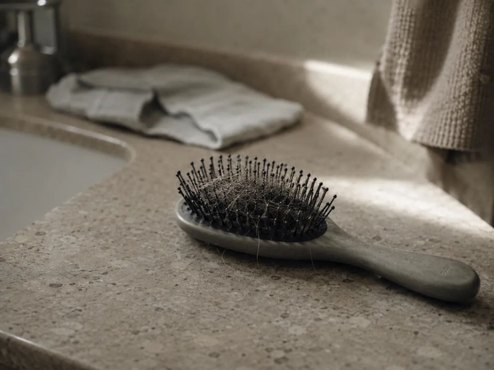
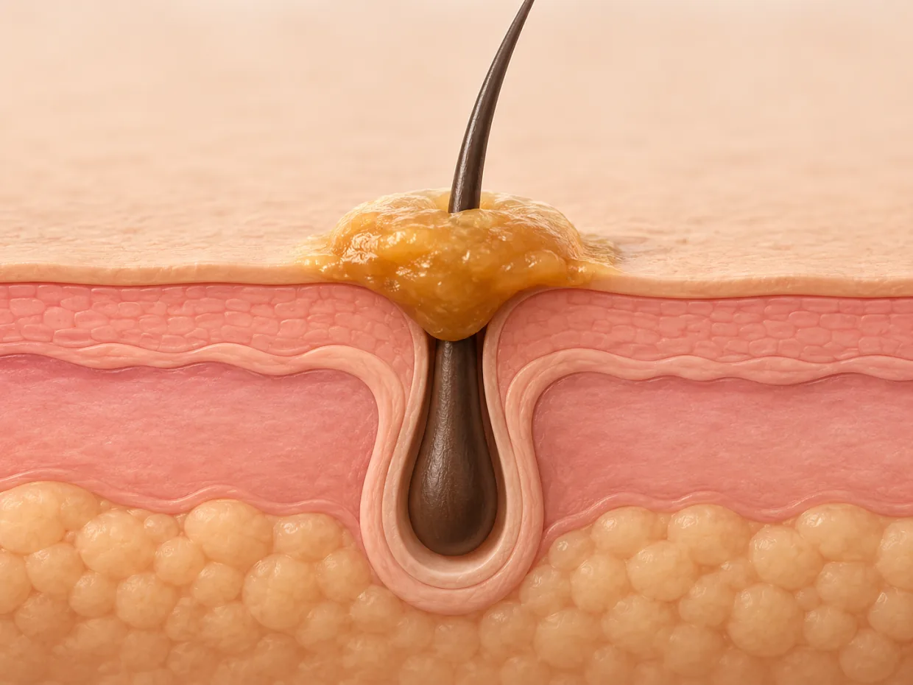

Why So Many Women Over 50 Are Quietly Losing Hair at the Crown — And the Overlooked Scalp Problem Getting New Attention
It isn't only age or hormones. A newer explanation points to something most women never think to check.
Something quiet is happening to women over 50.
It rarely makes the news. It doesn't show up overnight. It shows up in the brush, in the shower drain, on the pillow — a little more each month.
And then one morning, under the bathroom light, the part down the middle looks wider than it used to. A little see-through.
For years, women were told the same three things. Blame your age. Blame your hormones. Blame your genes.
But a growing body of research has turned its attention to the scalp itself — the environment the follicle has to grow in. And it points to something most women never check. The condition of the scalp underneath.
Where The Attention Has Quietly Turned
The old idea was simple: hair thins because the follicle is giving up.
The newer idea looks one layer higher — at the environment the follicle has to grow in.
Dermatology researchers have increasingly pointed to the condition of the scalp environment — including surface buildup — as an overlooked part of the picture in how hair looks and feels over time. Trichologists — the specialists who study the hair and scalp — describe the scalp as the soil the follicle grows in. Healthy growth isn't only about the root. It's about whether that root can actually breathe.
As one scalp specialist put it, the follicle can only do its job if the surface around it stays clear.
This matters most for women in their 50s and 60s. The menopausal years can change the scalp. And that change, left alone, can quietly build into a problem nobody warned them about.
A Feeling Many Women Already Know
Many women describe the same quiet changes — a little more scalp showing at the part.
A ponytail that wraps the elastic one more time than it used to.
Hair that just isn't what it was a few years ago — finer, flatter, gone limp by the afternoon.

Most blame the hot-flashes era. The hormones. The unfairness of it all — nobody batted an eye when their husband thinned out at 25.
But here is the part that's been missing. For many of them, it may not be only hormones. And it was never their fault.
There is something sitting on the scalp that almost no one talks about.
Meet The Hidden Layer Choking The Root
Picture the roots of hair like tiny sprout holes in soil.
Over many years, a hardened layer of greasy buildup can form over those holes. It seals them shut. The root underneath can't breathe.
New growth has to push up through that hardened layer — and it struggles. It comes in finer. Then it gives up.
It doesn't have a formal clinical name. Dermatology describes the underlying process as sebum buildup, or occlusion; here we'll call it what it looks like — the Grease Cap.

The Grease Cap isn't dirt you can see. It's an oily, waxy film that washes off the surface but hardens deeper down, right over the root. Hair can look clean and the scalp can still be sealed at the same time.
And here is the quiet cruelty of it. The Grease Cap is invisible. Women feel the result — the thinner part, the smaller ponytail — long before they ever suspect the cause.
"Hair can look clean and the scalp can still be sealed at the same time."
Why Washing Every Day Never Fixed It
So why doesn't regular shampoo handle this?
Because daily liquid shampoo is built to do one thing — strip oil off the surface.
Strip the surface hard enough, and the scalp panics and makes more oil to replace it. The cycle feeds itself.
And it never dissolves the hardened cap underneath. A woman can wash every single day and leave the Grease Cap exactly where it is.
This is also why the other things didn't work.
The biotin. The serums. The expensive monthly supplements that promised so much. None of them failed because of her. They simply landed on a sealed scalp and sat there. They never reached the root, because the Grease Cap was in the way.
That's worth saying again. The products didn't reach the follicle. They couldn't. Anything applied to a scalp sealed by buildup tends to sit on the surface rather than reach the follicular environment beneath. The cap blocked them.
A Different Approach Is Getting Attention
This is where a different idea has started getting attention.
Instead of stripping the scalp harder, the goal is the opposite — to gently dissolve the buildup so the root can finally breathe again.
The idea behind this approach is that it often takes a different kind of product entirely. Not another liquid shampoo. Not another serum poured on top.
What's needed is something concentrated enough to break down the hardened layer at the source — without the harsh sulfates that triggered the oil cycle in the first place.
That pointed people toward an unlikely place. A bar.
One Option Women Are Talking About
Among the products built around this idea, one that's been getting attention is Kalmely — a Korean scalp bar made by a separate company, formulated specifically to help break down this kind of buildup.
Three things make it fit the problem so neatly.
First, it's built around clearing the scalp, not stripping it. The formula uses fermented botanical oils designed to help melt the hardened layer instead of scrubbing at fragile roots.
Second, it's built to work on the Grease Cap directly — designed to help break down that kind of buildup, so the scalp can feel clean and clear again.
Third, it's gentle and sulfate-free. It doesn't strip the surface raw, so it doesn't re-trigger that "make more oil" panic that started the cycle.
The ritual is almost too simple. In the shower, it goes first. About sixty seconds — work it into the scalp, let it sit, rinse. The bar where the shampoo used to be. Nothing new to learn.
What Women Tend To Notice First
Most women describe the same thing early on. The scalp feels lighter. Cleaner. Like it can finally breathe.
The look of fullness takes longer. This works gradually, not overnight — week by week, not by Friday. The brush slowly holds less. The drain clears. And that part down the middle — the one so many learned to hide by switching sides — slowly starts to look more like their own again. It's designed to support the appearance of fuller, healthier-looking hair over time.
Because results build over weeks, the makers offer a 60-day money-back guarantee. The idea is simple: give it real time, and if you're not happy with it, you aren't out anything.
No overnight promises here. No quick fixes. Just a lighter-feeling scalp that gets a real chance to breathe — the missing first step that came before all the rest.
As with any scalp product, you may want to check the full ingredient list or speak with your dermatologist before starting.
In Their Own Words
"Honestly, I'd stopped checking the mirror on the way out the door. The first thing I noticed wasn't even my hair — it was that my scalp just felt lighter. Like it could finally breathe."
Carol R. · 58, used it daily for two months
"I'd already tried the serums and the vitamins. This was the first thing that felt like it was actually doing something at the scalp, instead of just sitting on top of the problem."
Sandra M. · 61, has been using it since the spring
"It's not overnight — they're honest about that. But a few weeks in, my scalp just feels healthier and I stopped fussing over it in the mirror."
Denise K. · 63
Individual experiences shared by customers. Results not typical and will vary from person to person.
The Quiet Choice In Front Of You
There's a version of this where nothing changes. The part keeps widening. The ponytail keeps shrinking. And every mirror gets scanned on the way out the door.
And there's another version — where the scalp gets a real chance to breathe, and the part slowly starts looking like it used to.
The women noticing this shift didn't do anything heroic. They just stopped blaming themselves, and started with the scalp.
For women who have noticed the part widening, it may be worth understanding what's behind it.
This is a paid advertisement. This article is for general information only and is not medical advice. Results not typical; individual results vary from person to person and develop gradually. Kalmely is a cosmetic scalp-care product and is not intended to diagnose, treat, cure, or prevent any disease, and is not a treatment for hair loss. Consult your doctor or dermatologist with any questions about your scalp or hair.